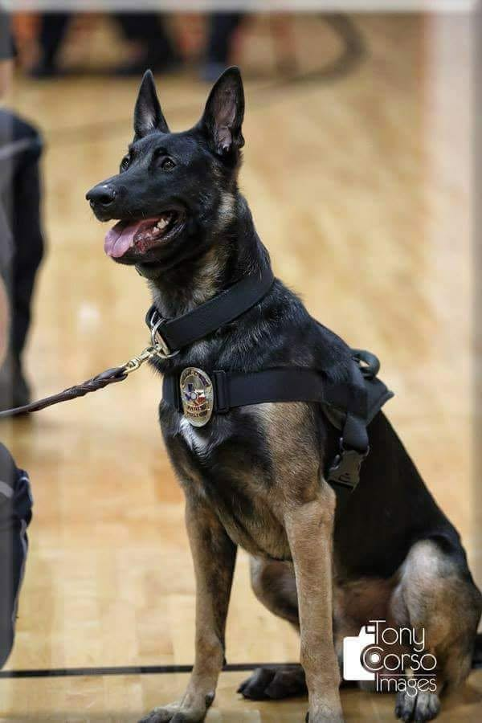
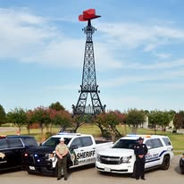
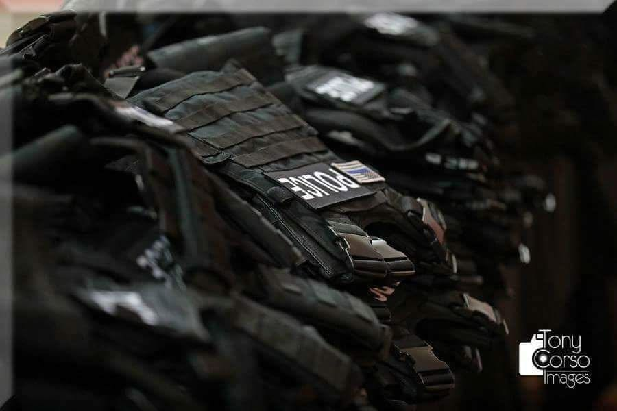
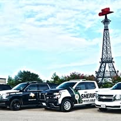

Providing equipment, resources, assistance, and support to law enforcement, first responders, their families, and our community.
SEE OUR IMPACTGET INVOLVEDLamar County Adopt-A-Cop supports law enforcement officers, first responders, their families, and the communities they serve through protective and safety equipment, wellness and educational resources, assistance during off-duty illness, injury, or hardship, and support for community and public safety initiatives.

From ballistic vests, helmets, and safety equipment to first-responder assistance, community programs, disaster relief, and partnerships, our story is built from years of responding when a need arises.
Some projects are large. Others may touch only one family, one responder, or one child. Each is part of the same mission: showing up for the people who serve and the community we call home.
EXPLORE WHAT WE DO


Our work extends beyond equipment. We are proud to support first responders and their families, community initiatives, local partnerships, and programs such as the Reno Police Department Special Heroes Unit.
OUR STORY